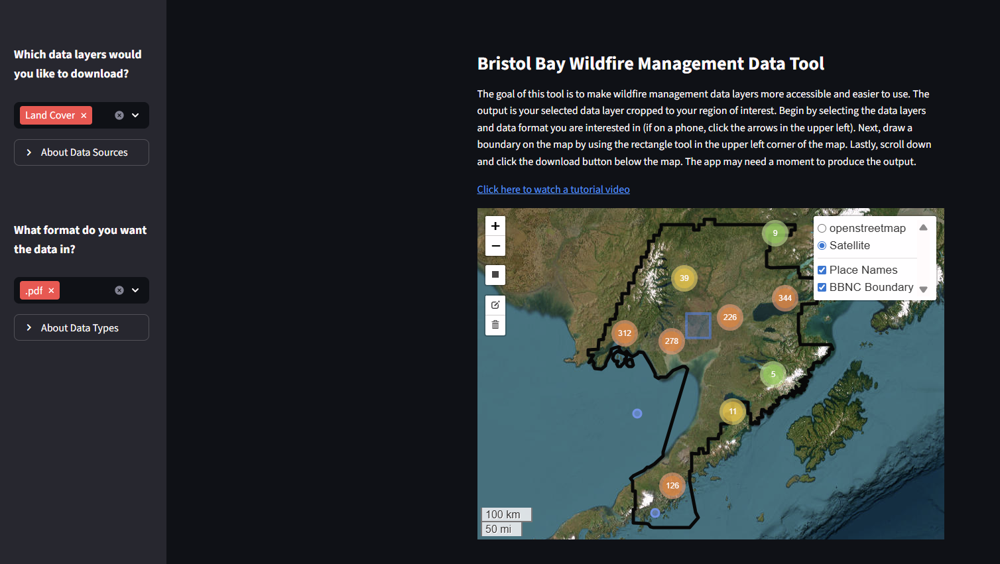
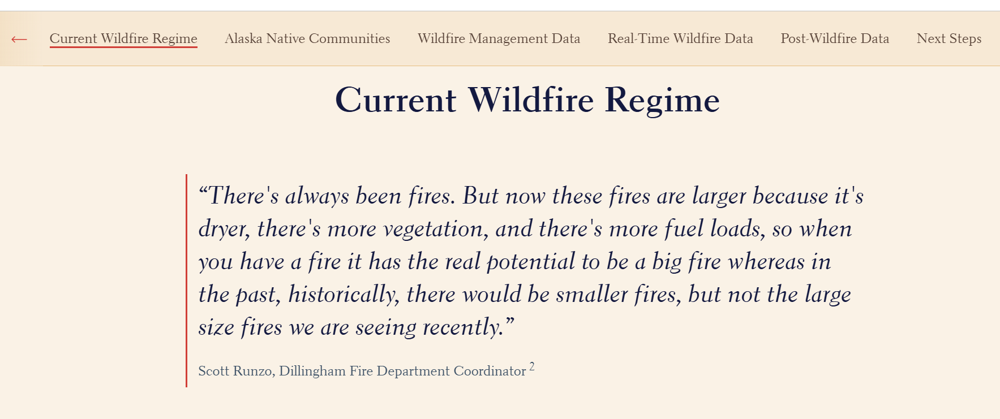
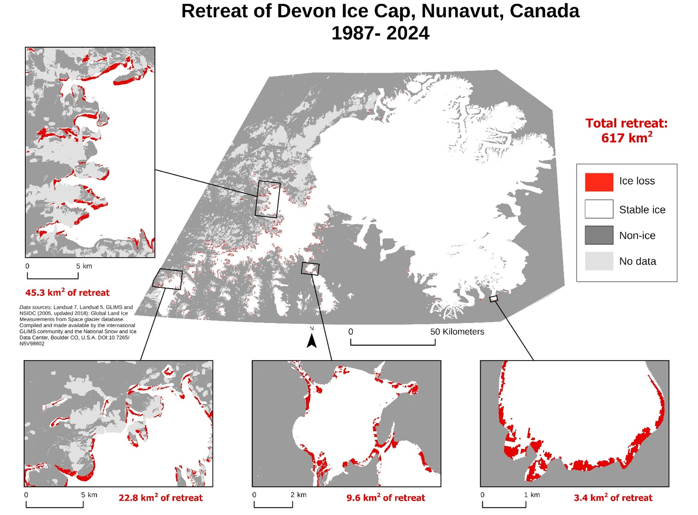
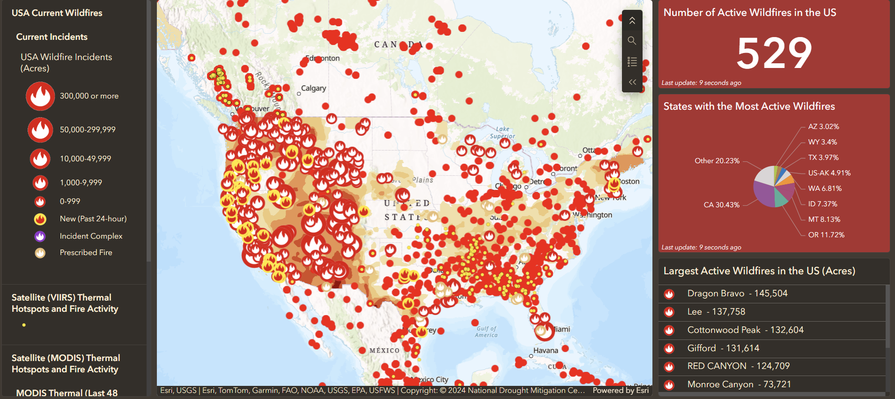
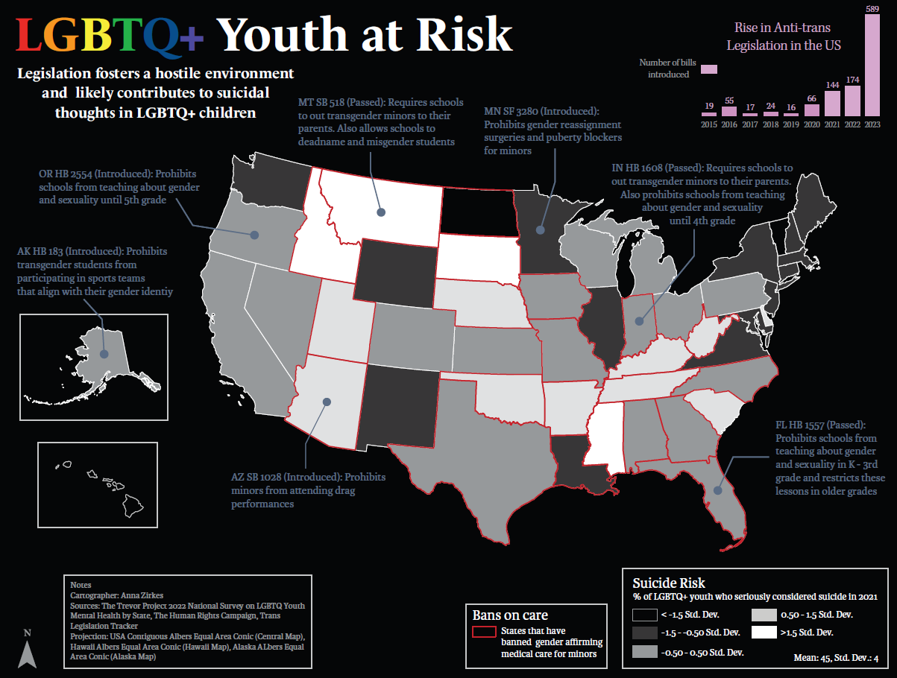
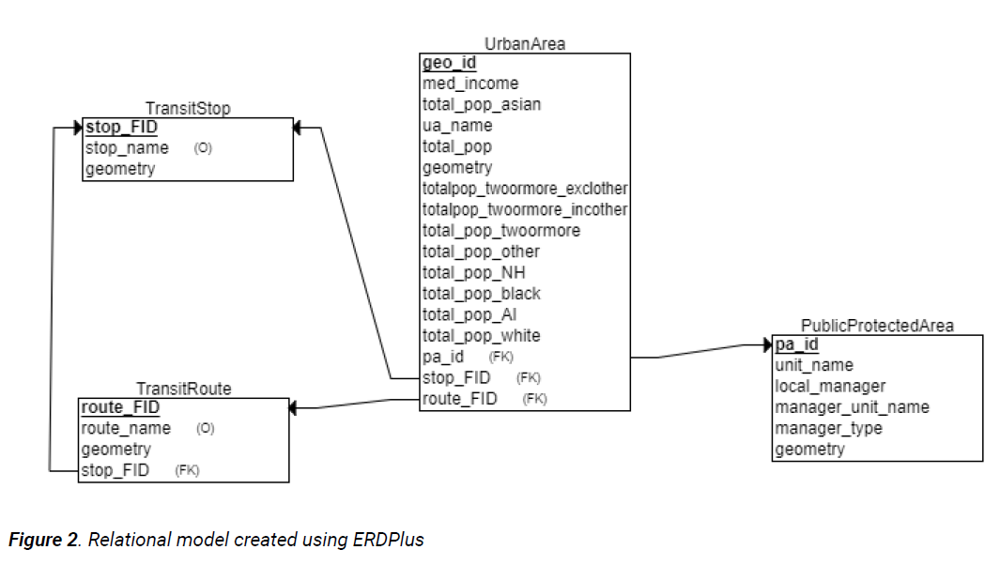

Projects
Wildfire Mangement Data App
Geospatial Intern, The Nature Conservancy - Alaska

Burn Severity and Vegetation Recovery Tool
Geospatial Intern, The Nature Conservancy - Alaska

Bristol Bay, AK Wildfire StoryMap
Geospatial Intern, The Nature Conservancy - Alaska

Devon Ice Cap Retreat, Velocity, and Elevation Analysis
Master’s Coursework

ArcGIS Wildfire Dashboard + Tutorial
Master’s Coursework

Literature Review: Remote Sensing of Permafrost Thaw and Associated Infrastructure Damage Using Very High-Resolution Imagery
Master’s Coursework
LGBTQ+ Youth Spatial Analysis
GIS Certificate Coursework

Access to Green Spaces Analysis
GIS Certificate Coursework
